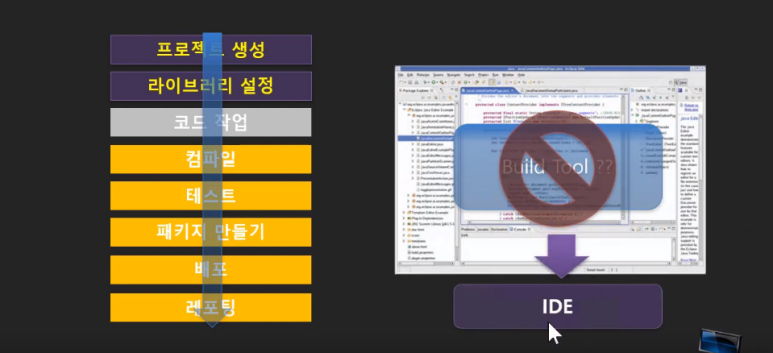

01. Maven
- 1.1) 개요
- 아파치 소프트웨어 재단에서 개발하는 Java 기반 프로젝트의 라이프사이클 관리를 위한 빌드 도구.
- 1.2) 빌드란?
- 소스코드 파일을 컴퓨터에서 실행할 수 있는 독립 소프트웨어 가공물로 변환하는 과정 또는 그에 대한 결과물
- 이를 좀더 쉽게 풀어 말하자면 우리가 작성한 소스코드 및 프로젝트에서 쓰인 자원을 톰캣 같은 WAS가 인식할 수 있는 구조로 패키징 하는 과정 및 결과물이라고 할 수 있다.
- 1.3) 빌드 도구(Build tool)
- 빌드 도구란 프로젝트 생성, 테스트 빌드, 배포 등의 작업을 위한 전용 프로그램.
- 빠른기간동안 계속해서 늘어나는 라이브러리 추가, 프로젝트를 진행하며 라이브러리의 버전 동기화의 어려움을 해소하고자 등장.
- 초기의 java 빌드도구로 Ant를 많이 사용하였으나 최근 많은 빌드도구들이 생겨나 Maven이 많이 쓰였고, 현재는 Gradle이 많이 쓰인다.
- 1. 4) Maven 장점
- 컴파일과 빌드를 동시에 수행할 수 있다.
- 개발하다 보면 다양한 라이브러리를 필요로 하게 되는데, pom.xml 파일에 필요한 라이브러리만 기술하면 Maven이 알아서 다운받고 설치해주고 경로까지 지정해준다.
- pom.xml 파일을 통해 관리하므로 개발, 유지보수 측면에서 관리가 용이하다. 즉 개발자들은 pom.xml 파일만 공유 하면된다.
- 1.5) Maven 단점
- Maven에서 기본적으로 지원하지 않는 빌드 과정을 추가해야 하는 경우 상당한 고생이 따른다.
- 특정 플러그인이 설정이 약간만 달라도 해당 설정을 분리해서 중복 기술할 때가 발생한다.
- 이와 같은 단점을 해결하기 위해, Gradle(그레이들)이라는 새로운 빌드 툴이 등장하였다.
- 1.6) POM(프로젝트 객체 모델(Project Object Model))
- POM은 pom.xml 파일을 말하며 pom.xml 은 메이븐을 이용하는 프로젝트의 root(최상위)에 존재하는 xml 파일이다.
- (하나의 자바 프로젝트에 빌드 툴을 maven으로 설정하면, 프로젝트 최상위 디렉토리에 "pom.xml "이라는 파일이 생성된다.)
- Maven의 기능을 이용하기 위해서 POM이 사용된다.
- pom.xml 파일은 프로젝트마다 1개이며, pom.xml를 보면 프로젝트의 설정, 의존성 등을 알 수 있다.
- 다른 파일이름으로 지정할 수도 있다.하지만 pom.xml으로 사용하기를 권장한다.

- IDE는 통합 개발 환경(Integrated Development Environment, IDE)을 뜻하며 공통된 개발자 툴을
사용하여 애플리케이션을 구축하기 위한 소프트웨어입니다. visual studio, Eclipse, IntelliJ 등이
있으며 IDE는 소스 코드 편집기, 로컬 빌드 자동화, 디버거 등과 같이 개발에 필요한 모든 기능을
가지고 있다. 따라서 프로젝트생성부터 배포 혹은 레포팅까지 이어지는 빌드 과정은 보통 IDE
에서 가능하기도 하다. 하지만 IDE는 많은 기능 중에 빌드 도구를 포함하고 있을 뿐이며 Maven은
빌드 도구로써 해당 과정에 대해서만 관리를 하며 IDE에 종속되지 않고 사용 가능하다.